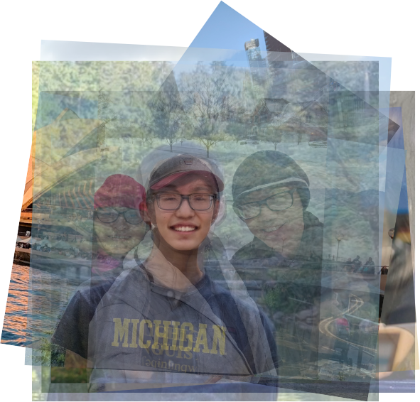

The Spalling Bie
The Spalling Bie is just like the New York Times Spelling Bee, except you only get points for fake words that sound plausible.
[Link]
Hi, I’m Naitian.
That’s pronounced naɪtjen like 🌙 💴.
I’m a PhD student at the UC Berkeley School of Information, where I’m advised by David Bamman and supported by the NSF graduate research fellowship.
My research centers on developing computational methods to understand meaning embedded in style. This draws on a variationist sociolinguistic / cultural anthropological perspective of culture, and spans the fields of NLP, computational social science, and cultural analytics. Methodologically, I am interested in multimodal approaches to language, vision and speech. I also care a lot about the news, data journalism, data visualization and crossword puzzles.
If you are interested in doing research or grad school, I am always happy to chat about my experiences. If you are a Berkeley undergrad interested in doing cultural analytics research, you should apply for a UROP opportunity with my advisor, David Bamman.

“One picture is hard to identify a person with” ~ David Fouhey
Updates
- May. 2025: Our paper, Culture is Not Trivia: Sociocultural Theory for Cultural NLP has been accepted to ACL main conference in Vienna (wünderbar!)
- Dec. 2024: I will be traveling to CHR in Aarhus — excited to meet folks there (hej!)
- Nov. 2024: I passed my prelim exams, and also turned 25! (old!)
- Nov. 2024: Our paper on measuring diversity in Hollywood has been published to PNAS (science!)
- Sep. 2024: My paper Once More, With Feeling has been accepted to CHR 2024! (yippee!)
- Apr. 2024: Our paper on linguistic variation in memes has been accepted to NAACL 2024! (whoo!)
- Oct. 2023: I presented at NWAV51 about how zero-shot text-to-speech models erase phonological variation (schwa!)
- Mar. 2023: The NSF awarded me the Graduate Research Fellowship (wild!)
- Aug. 2022: I started my PhD at UC Berkeley (omg!)
- Jun. 2022: I ran my first marathon (oof!)
- Mar. 5, 2022: Ran my first half marathon race (whoa!)
- Sometime between Dec. 2021 and Jan. 2022: Graduated from the University of Michigan (wow!)
- Dec. 22, 2021: Received an Honorable Mention for the CRA Outstanding Undergraduate Researcher Award (neat!)
- Nov. 26, 2021: Launched the Spalling Bie (cool!)
Publications
For a full list, check my Google scholar.
Culture is Not Trivia: Sociocultural Theory for Cultural NLP
We draw on sociocultural linguistic theory to provide a theoretical framework for understanding current gaps in cultural NLP, and offer paths forward for future work. In this paper, we 1) demonstrate in a case study how it can clarify methodological constraints and affordances, 2) offer theoretically-motivated paths forward to achieving cultural competence, and 3) argue that localization is a more useful framing for the goals of much current work in cultural NLP.
[Website] [PDF]
Once More, With Feeling: Measuring Emotion of Acting Performances in Contemporary American Film
Proceedings of Computational Humanities Research 2024
In this paper, we conduct a computational exploration of acting performance. Applying speech emotion recognition models and a variationist sociolinguistic analytical framework to a corpus of popular, contemporary American film, we find narrative structure, diachronic shifts, and genre- and dialogue-based constraints located in spoken performances.
[Website] [PDF]
Proceedings of Computational Humanities Research 2024
In this paper, we conduct a computational exploration of acting performance. Applying speech emotion recognition models and a variationist sociolinguistic analytical framework to a corpus of popular, contemporary American film, we find narrative structure, diachronic shifts, and genre- and dialogue-based constraints located in spoken performances.
[Website] [PDF]
Measuring diversity in Hollywood through the large-scale computational analysis of film
Proceedings of the National Academy of Sciences
We design a computational pipeline for measuring the representation of gender and race/ethnicity in film. Doing so allows us to study representation and diversity in Hollywood over this period, confirming earlier studies that see an increase in diversity over the past decade, while allowing us to use computational methods to uncover a range of ad hoc analytical findings.
[PDF]
Proceedings of the National Academy of Sciences
We design a computational pipeline for measuring the representation of gender and race/ethnicity in film. Doing so allows us to study representation and diversity in Hollywood over this period, confirming earlier studies that see an increase in diversity over the past decade, while allowing us to use computational methods to uncover a range of ad hoc analytical findings.
[PDF]
Social Meme-ing: Measuring Linguistic Variation in Memes
Proceedings of the 2024 Conference of the North American Chapter of the Association for Computational Linguistics: Human Language Technologies (Volume 1: Long Papers)
Much work in the space of NLP has used computational methods to explore sociolinguistic variation in text. In this paper, we argue that memes, as multimodal forms of language comprised of visual templates and text, also exhibit meaningful social variation.
[Website] [PDF]
Proceedings of the 2024 Conference of the North American Chapter of the Association for Computational Linguistics: Human Language Technologies (Volume 1: Long Papers)
Much work in the space of NLP has used computational methods to explore sociolinguistic variation in text. In this paper, we argue that memes, as multimodal forms of language comprised of visual templates and text, also exhibit meaningful social variation.
[Website] [PDF]
Condolences and empathy in online communities
Proceedings of the 2020 Conference on Empirical Methods in Natural Language Processing (EMNLP)
In times of distress, we frequently go online to seek social support and condolence. But effectively providing that support to others is easier said than done. This study aims to computationally identify mechanisms and strategies for delivering effective and impactful condolence on social media.
[Website] [PDF]
Proceedings of the 2020 Conference on Empirical Methods in Natural Language Processing (EMNLP)
In times of distress, we frequently go online to seek social support and condolence. But effectively providing that support to others is easier said than done. This study aims to computationally identify mechanisms and strategies for delivering effective and impactful condolence on social media.
[Website] [PDF]
Code
I am writing or have written code for: The Michigan
Daily as the managing online
editor, NBC News as a Data
Graphics intern, the Michigan Data Science
Team as a project leader, Capital One as a software engineering intern
(x2 summers) and, of course, myself as naitian.
Here is a sampler of my work.
Where are the vaccine deserts?
I did research, data collection, analysis and graphics for an NBC News story tracking where Americans could expect to find pharmacies that would carry the Covid-19 vaccine. [Link]
I did research, data collection, analysis and graphics for an NBC News story tracking where Americans could expect to find pharmacies that would carry the Covid-19 vaccine. [Link]
Cover Story
As part of a challenge, I used a database of book titles from Amazon and a part-of-speech tagger to construct grammatically correct sentences using only book titles. Earned an honorable mention from Randall Munroe, creator of XKCD. [Link]
As part of a challenge, I used a database of book titles from Amazon and a part-of-speech tagger to construct grammatically correct sentences using only book titles. Earned an honorable mention from Randall Munroe, creator of XKCD. [Link]
If you start playing…
A different kind of New Year’s countdown, IYSP takes inspiration from the internet memes about “starting the year off right.” [Link]
A different kind of New Year’s countdown, IYSP takes inspiration from the internet memes about “starting the year off right.” [Link]